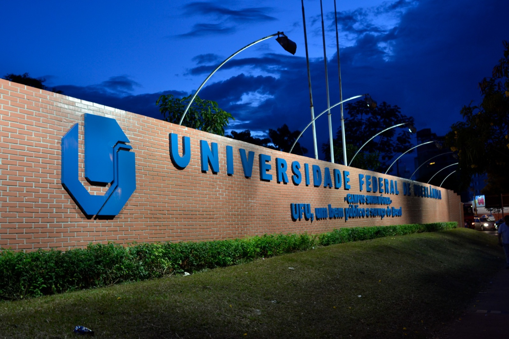
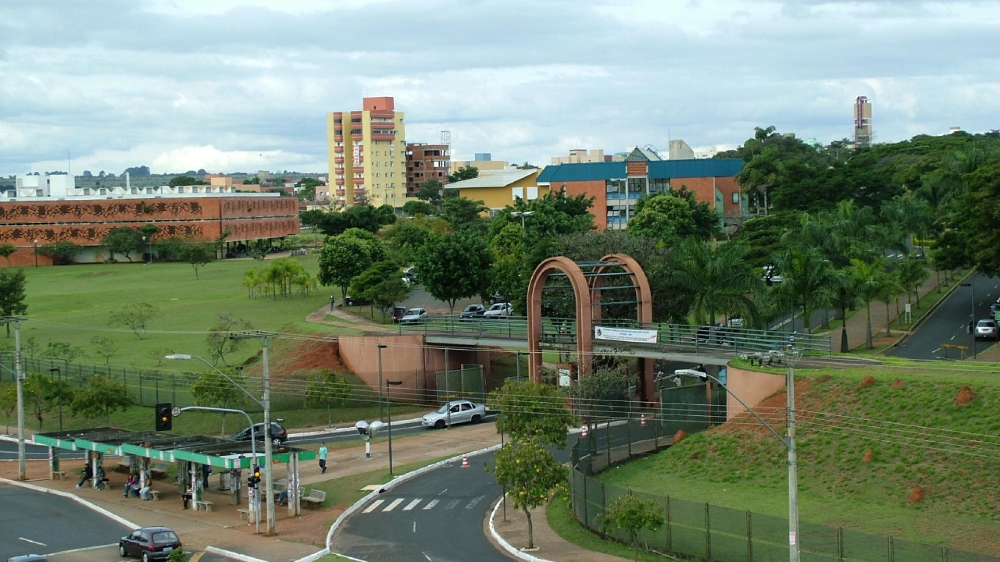
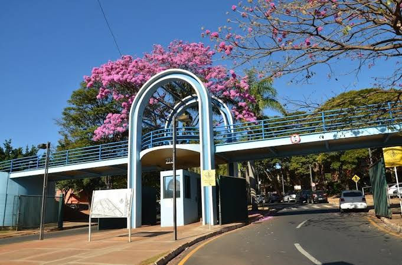

Quem faz a robô andar.
Estudantes de engenharia e administração da UFU, orientados por um professor doutor. Cada área tem dono — e todas jogam juntas.
Universidade Federal
de Uberlândia.
A EDROM nasce e cresce dentro da UFU — uma das maiores universidades federais do país. É no Campus Santa Mônica, em Uberlândia (MG), que projetamos, montamos e testamos nossas robôs humanoides.
Somos vinculados à FEMEC/UFU (Faculdade de Engenharia Mecânica) e orientados pelo Prof. Dr. Rogério Sales Gonçalves. A estrutura da universidade — laboratórios, oficinas e comunidade acadêmica — é o que torna possível transformar teoria em robôs que jogam futebol sozinhos.
Mais do que um espaço físico, a UFU é o ambiente que forma engenheiros: aqui os integrantes enfrentam problemas reais de mecânica, eletrônica, controle e visão computacional, trabalhando em equipe como numa empresa de tecnologia.
É essa base acadêmica que sustenta cada conquista da EDROM e que, ano após ano, prepara novos talentos para o mercado e para a pesquisa.


